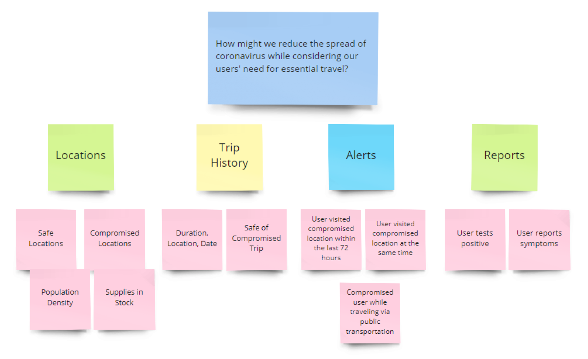
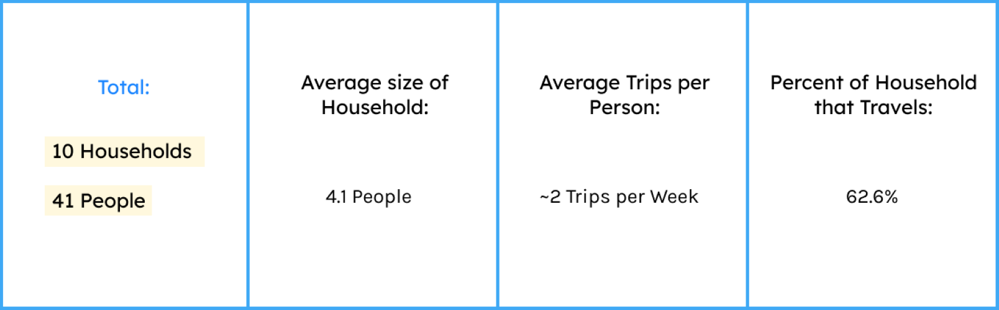
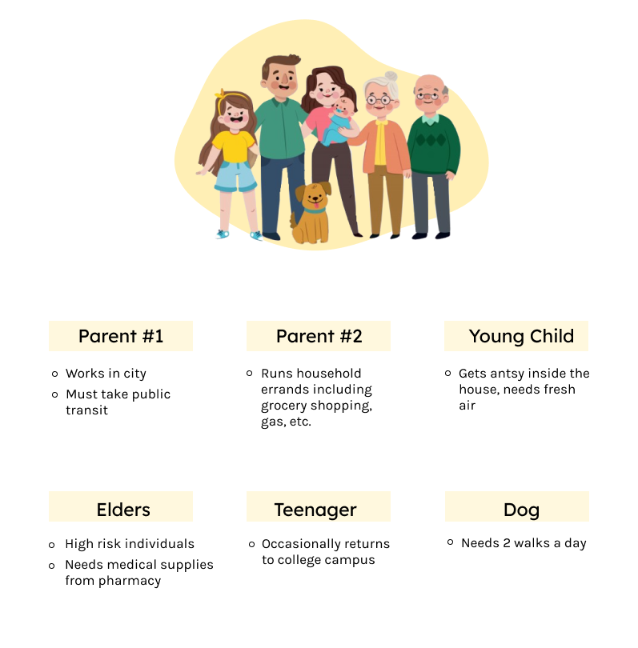
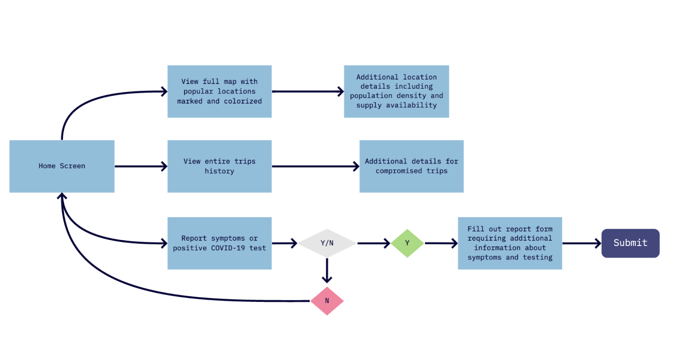
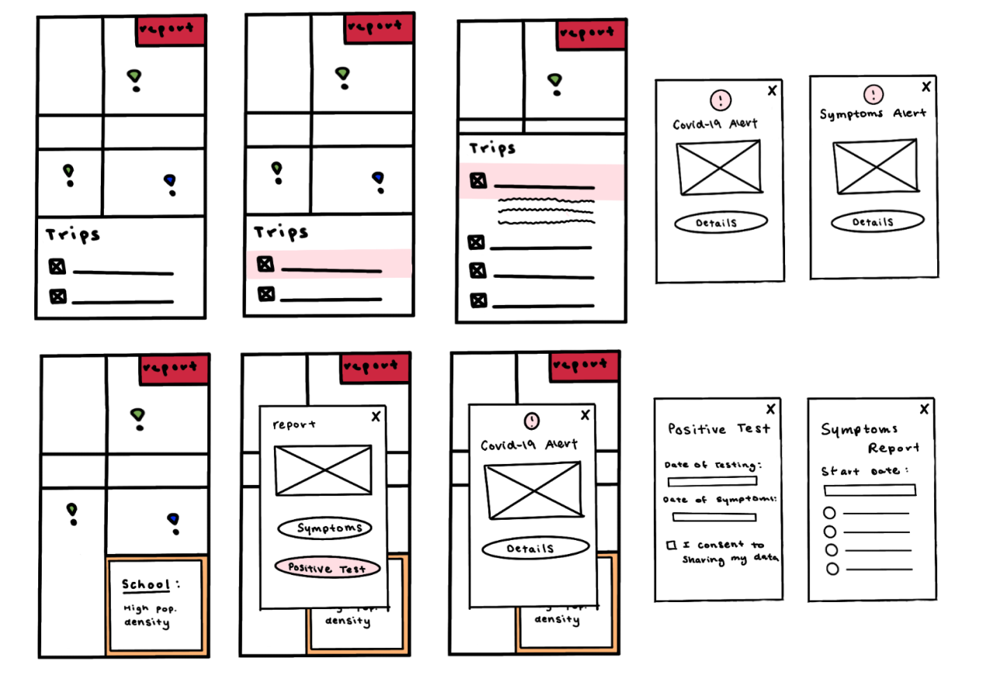
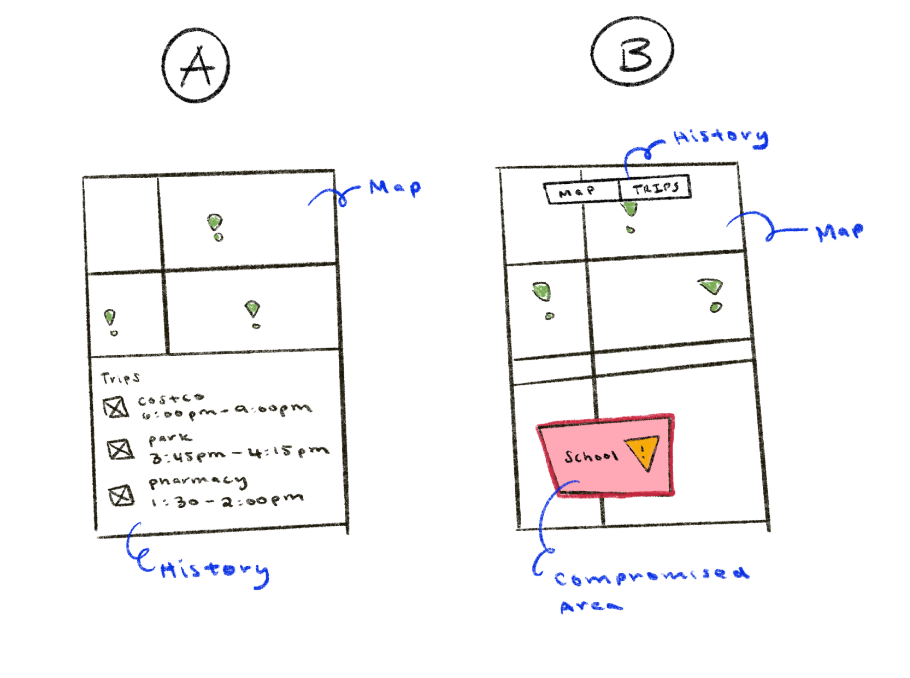
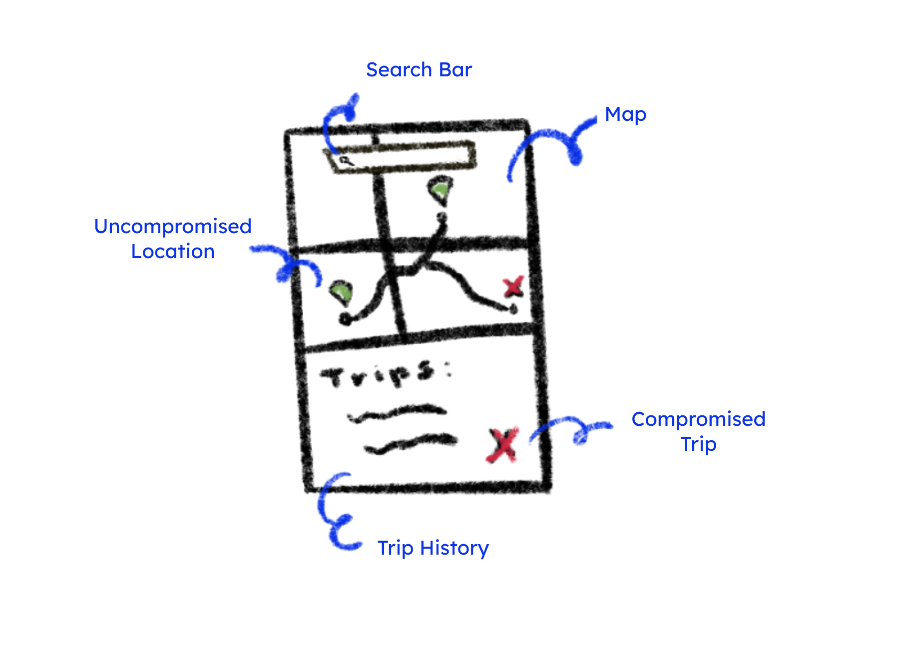
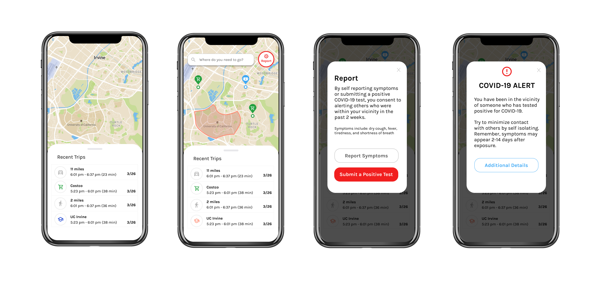
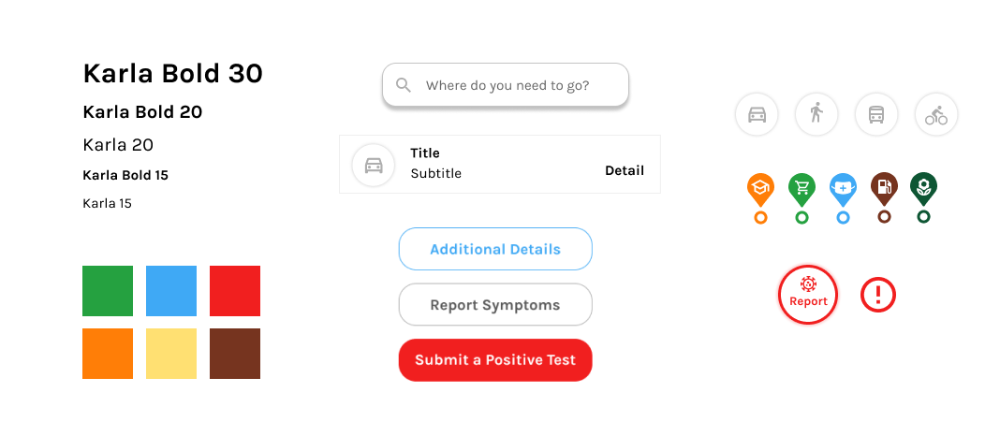

Overview
Background
This year, the COVID-19 pandemic has changed the way we interact with our communities. Although the CDC recommends isolation and social distancing to prevent the spread of coronavirus, many people have the essential need for traveling. Our project aims to reduce the growth rate of coronavirus within our communities by providing people with a platform for their essential travel needs.
Coronavirus has a 2 week long asymptomatic period where an infected person does not experience any symptoms of the virus but can still infect others. Additionally, the virus can last up to 72 hours on surfaces meaning people can still be infected even if they were not in direct contact with a carrier.
The Challenge:

Our Solution
A mobile app that provides users with a platform for essential travel while using contact tracing to track the spread of coronavirus. NOVID-19 uses bluetooth and location settings to calculate the population density based on the number of devices nearby. With this technology, users can also see how many other users they come into contact with and if they are at risk for coronavirus.
UX Research
We chose to conduct surveys and user interviews to gain a better understanding of essential travel needs within different households. During this process we confirmed the real need for essential businesses including grocery stores and pharmacies to remain open but also noticed a trend in other public areas including parks and schools.

We gathered data from 10 households which totaled to 41 people. These people differed in location, age, and socioeconomic status. Through our user research we aimed to gain a better understanding of many different types of households and the essential travel needs that each one has.
Who am I designing for?:
User Needs:
-
Safe method of travel: public transportation/walking
-
Available essential businesses goods (ex. Groceries, medical supplies)
- Knowledge about compromised public spaces (ex. Schools, parks, essential businesses)
User Flow
Key research insights we found to be helpful included the difference in technological ability between younger and older users, the range in familiarity of the current user interface between new and experienced users, and the effect of visuals to efficiently convey complex health related information. Some industry constraints to consider included the nature of changes in the Healthcare industry being slow and incremental due to the many rules and regulations on sharing information.
Low Fidelity Prototypes
Due to these constraints it was difficult to brainstorm incredibly innovative and novel solutions which we learned through early meetings with stakeholders. We knew we had to keep the app accessible to all users and hold the highest standard of integrity for the information the app provides. Our challenge was particularly challenging since we were designing a solution for when important information was not available. Keeping this in mind, we proposed a solution that had distinct user flows for new and experienced users. The feedback we received on our first iteration was that we should break down our proposal into seperate parts. Doing this would allow business leaders to discuss each incremental change and whether to implement it.

A/B Testing
After separating our all encompassing solution into many distinct experiences, we further expanded on those ideas and created user flows around each iteration. We then presented each of these experiences to Dexcom users and used their feedback to refine our designs.
Final Lo-Fi Prototype
The results of our A/B Testing concluded that option A was the better choice. Users enjoyed being able to see both the maps and their past trips at initial glance. Option A also allows for users to quickly identify a compromised trip.
High Fidelity Prototype
Ultimately our final presentation to Dexcom stakeholders contained three solutions that could work together or separately to provide an improved user experience when signal loss occurs. We concluded our work by demonstrating our interactive Figma prototypes and presenting our slide deck and poster that outlines our design process and outcomes.
Style Guide
Reflection
I've learned so much from this experience from how to best communicate with stakeholders to the intense regulations of the healthcare industry. In addition to strengthening my skills as a researcher and designer, I've learned the importance of word choice and providing options to decision makers and the importance of good design choices for the people who rely on CGMs to live. Thank you to everyone at DDI for creating this program! Our work would not have been possible without the feedback and support from Lars Müller, Heidi Rataj, Colleen Emmenegger, and Ben West.